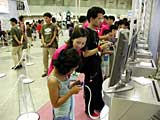
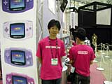
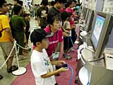
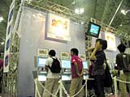

| #2 ゲームボーイアドバンス 任天堂タイトル体験コーナーレポート その1 |
| 今年の目玉はゲームキューブだけじゃない! ゲームボーイアドバンスの注目作だってこんなにあるってところをお見せしちゃいましょう。 |
ゲームボーイアドバンス 任天堂タイトル体験コーナーレポート その1 page1 ・・・ page2 |
| ● サーベルウルフ（仮称） |
|
 キミは伝説の探検家サーベルマン。いろんなアイテムを駆使して、盗まれた財宝をサーベルウルフから取り戻すのが目的です。サーベルウルフに追いかけられるスリル、そして、宝を無事テントに持ち帰った時の達成感は格別！ 「追いかけっこの緊張感ももちろんなんですが、美しいグラフィックと、映画のようなサウンドにも注目して下さい。幅広い年齢層の方に楽しんでいただけるソフトだと思います」とスタッフの方も力強く語ってくれました。 |
| ● ルナブレイズ（仮称） |
|
 全部で170種類以上にもおよぶモンスターを召喚して敵と戦う、新感覚RPGシミュレーション。個性的なモンスターたちは、合体、変身を行うことでさらに強力なモンスターに生まれ変わります。集めたモンスターは、友達と交換することもできちゃう。ぜひとも、すべてのモンスターをコレクションしてみたいところですね。 このブースではラッキーにも開発者のコメントを聞くことができました。 「このゲームは駆け引きがおもしろいです! ルールは少し複雑ですが、慣れれば慣れるほど楽しくなりますよ。本当は5〜6時間はプレイしていただいたほうが、ゲームの魅力がより理解できるんですが、会場ではそうもいかないのが残念なところです」 これはぜひ製品版を買ってやりこまねば! |
| ● ディディーコングパイロット（仮称） |
|
 おなじみのディディーコングたちが飛行機に乗り込み、大空を舞台に大レースを展開！ 動きセンサー搭載なので、ゲームボーイアドバンスを傾けることで、一味違った空中レースが楽しめます。 このブースには割とお子さんのファンが多く、スタッフのお姉さんが一緒に手を取って、動きセンサーによる空中飛行をレクチャーするという、微笑ましい光景も見られました。華麗な飛行テクニックを身につけ、大空を自分の物にできたら楽しいでしょうね！ |
| ● ハッピィパネッチュ!（仮称） |
|
 ゲームボーイアドバンスを傾けてフィールドのパネッチュを動かし消していく、動きセンサー搭載の体感傾けアクションパズルです。たくさんのパネッチュを一度に消す気持ち良さを味わえば、きっとあなたはこのゲームがやめられなくなってしまうことでしょう。 『コロコロカービィ』とはまた違い、ダイナミックに本体を動かしパネッチュを操作するのがこのゲームの特徴。豪快に本体を傾けてプレイしていたユーザーを捕まえてお話を聞いてみると、 「操作感はとてもいいですね。連鎖もそんなに難しくないので、小さい子でも楽しめそうな感じです」と語ってくれました。 |
ゲームボーイアドバンス 任天堂タイトル体験コーナーレポート その1 page1 ・・・ page2 |
| 前のレポートへ | 次のレポートへ |
|
|